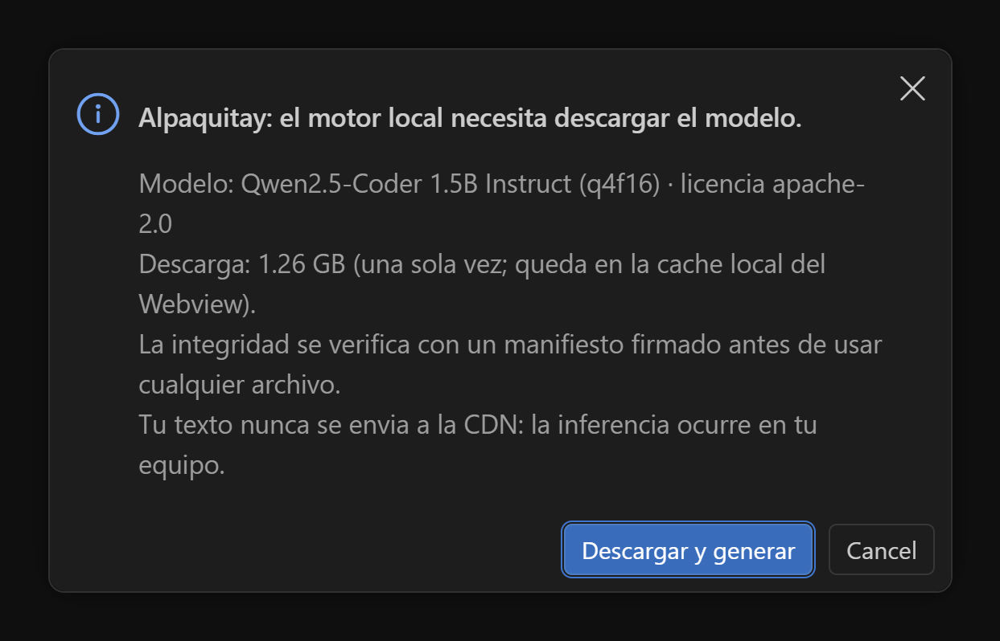
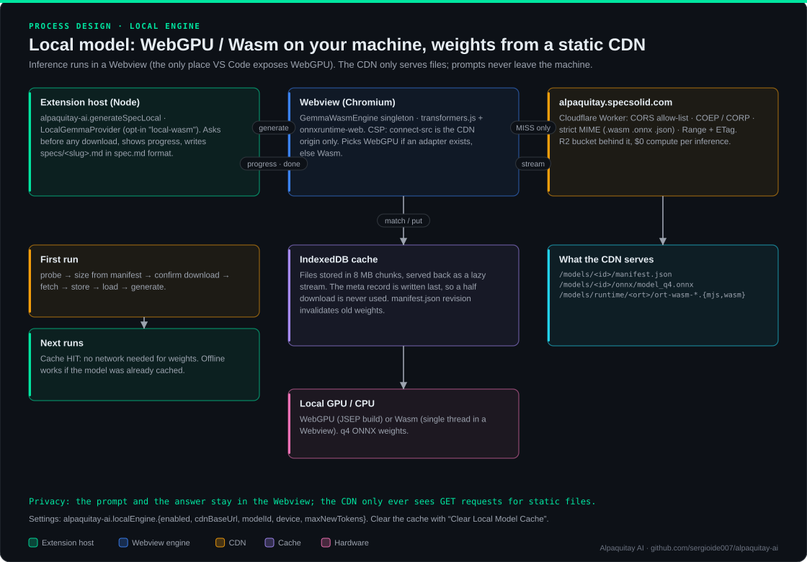

Capítulo 10
Motor local: IA en tu equipo con WebGPU
El motor local ejecuta un modelo de lenguaje dentro de VS Code, en tu propia GPU. Tu texto no sale del equipo: lo único que viaja por la red es la descarga, una sola vez, de los archivos del modelo, que además están firmados. Después funciona sin conexión, y el coste de inferencia en el servidor es cero.
Qué necesitas
| Requisito | Detalle |
|---|---|
| WebGPU en VS Code | Una GPU con controlador actualizado. El modelo por defecto necesita además la función shader-f16. Las GPU integradas recientes (por ejemplo Intel UHD/Iris) sirven. |
| Memoria | 8 GB de RAM como mínimo. |
| Disco | Unos 1,3 GB para la caché del modelo por defecto. |
| Conexión | Solo la primera vez (o cuando se publica una revisión nueva del modelo). |
Si tu equipo no cumple algo de esto, el comando se niega antes de descargar nada y te dice por qué.
Usarlo: Generate Specification (Local Model)
- Abre una carpeta de proyecto.
- Selecciona texto en el editor con la descripción de lo que quieres especificar, o no selecciones nada.
- Ejecuta Alpaquitay AI: Generate Specification (Local Model) desde la paleta (F1) o el menú Ctrl+Shift+A.
- Si no seleccionaste texto, escribe la descripción en el cuadro («Describe el proyecto o la funcionalidad que quieres especificar (se procesa en tu equipo)»).
- La primera vez, confirma la descarga (ver la sección siguiente).
- Sigue el progreso en la notificación: verificación del runtime, descarga, guardado en caché, carga en la GPU y generación token a token, con su velocidad.
- El resultado se escribe en
specs/<nombre>.mdcon el mismo formato que lee la pestaña Work. Nunca sobrescribe una especificación existente: si el nombre está ocupado, añade-2,-3…
Puedes cancelar en cualquier momento desde la notificación.
La confirmación de la descarga
Antes de descargar nada, VS Code muestra un diálogo modal:


Incluye el modelo y su licencia, el tamaño verificado de la descarga y estas garantías: la integridad se comprueba con un manifiesto firmado antes de usar cualquier archivo, y tu texto nunca se envía a la CDN.
- Descargar y generar inicia la descarga.
- Cancel (o Esc) detiene el comando: no se descarga nada y nada sale de tu equipo.
El diálogo vuelve a aparecer cuando se publica una revisión nueva del modelo, porque hay que descargarlo otra vez.
Rendimiento real
Medido el 15 de noviembre de 2026 en un portátil con GPU integrada Intel UHD (gen 9), VS Code 1.146, desde el CDN de producción y con el modelo por defecto:
| Fase | Tiempo |
|---|---|
| Descarga y verificación de 1,26 GB | unos 3 minutos a ~7 MB/s (depende de tu conexión) |
| Guardado en caché y carga en GPU | unos 15 segundos |
| Generación | 4,5–4,7 tokens/s; una especificación de 3 épicas en ~45 s |
| Ejecuciones siguientes | sin descarga: solo carga y generación |
Usarlo como proveedor de IA
Además del comando, el motor puede ser un proveedor más, como Ollama:
{
"alpaquitay-ai.localEngine.enabled": true,
"alpaquitay-ai.preferredProvider": "local-wasm"
}
Con preferredProvider en auto, se usa después de Ollama y LM Studio. Ten en cuenta su tamaño: sirve para preguntas, ideas y especificaciones; para implementar tareas de varios archivos, un modelo mayor en Ollama o en la nube da mejores resultados.
Caché y espacio en disco
- Los archivos se guardan en la caché del propio VS Code (IndexedDB del panel del motor), en bloques de 8 MiB. Una descarga a medias nunca se usa.
- Cuando cambia la revisión del modelo, los pesos antiguos se borran automáticamente.
- Alpaquitay AI: Clear Local Model Cache vacía la caché por completo.
Seguridad: por qué puedes fiarte de lo que se descarga
El CDN se trata como no confiable por diseño. Lo que hace válido un archivo es la firma, no el servidor:
- Cada modelo tiene un
manifest.jsonfirmado con Ed25519. La extensión trae las claves públicas del proyecto y rechaza cualquier manifiesto que no esté firmado por ellas o que sea más antiguo que el último que vio (protección contra rollback). - El manifiesto lista un SHA-256 por cada bloque de 8 MiB de cada archivo. Un byte cambiado, un archivo no listado o un bloque que no coincide se rechazan.
- Los archivos de ONNX Runtime están fijados por hash dentro de la propia extensión, y el panel del motor no permite cargar scripts remotos.
- El manifiesto se descarga sin descompresión: ningún descompresor procesa bytes de la red antes de comprobar la firma.
- La dirección del CDN, el modelo y las claves de confianza solo se pueden cambiar en tus ajustes de usuario, nunca desde los de un proyecto: un repositorio que abras no puede redirigir la descarga.


Puedes comprobar tú mismo qué modelos están publicados y si su firma es válida en Modelos disponibles.
Ajustes
| Ajuste | Por defecto | Para qué |
|---|---|---|
alpaquitay-ai.localEngine.enabled |
false |
Usar el motor como proveedor de IA. El comando funciona aunque esté desactivado. |
alpaquitay-ai.localEngine.modelId |
qwen2.5-coder-1.5b-instruct |
Qué modelo usar (ver Modelos). Solo en ajustes de usuario. |
alpaquitay-ai.localEngine.device |
auto |
auto, webgpu o wasm (CPU). |
alpaquitay-ai.localEngine.dtype |
auto |
Precisión de los pesos. Cámbiala solo si ves salida corrupta. |
alpaquitay-ai.localEngine.maxNewTokens |
1024 |
Máximo de tokens nuevos por generación. |
alpaquitay-ai.localEngine.cdnBaseUrl |
https://alpaquitay.specsolid.com |
CDN de donde se descargan los modelos. Solo en ajustes de usuario. |
alpaquitay-ai.localEngine.extraTrustedKeys |
[] |
Claves públicas adicionales para un espejo propio del CDN. Solo en ajustes de usuario. |
Si algo falla
| Mensaje o síntoma | Qué significa | Qué hacer |
|---|---|---|
| Se queda en «Preparando motor local…» | El diálogo de confirmación está esperando tu respuesta. | Búscalo en la barra de tareas y responde. |
| «VS Code está en renderizado por software…» | El proceso de GPU de VS Code falló y Chromium pasó a renderizar por software. | Cierra todas las ventanas de VS Code y vuelve a abrirlo. code --status debe mostrar webgpu: enabled en GPU Status. |
| «la GPU (…) no concede un adaptador WebGPU» | El controlador o la lista de bloqueo de Chromium impiden WebGPU. | Actualiza el controlador de vídeo. |
| «este VS Code no expone la API navigator.gpu» | VS Code demasiado antiguo. | Actualiza VS Code. |
| «Este modelo requiere WebGPU…» | Sin WebGPU, este modelo sería inutilizable en la CPU (un solo hilo). | Resuelve WebGPU con las filas anteriores. |
| «La GPU se quedó sin memoria o falló durante la generación» | La GPU no tuvo memoria para esa petición. El modelo se libera. | Cierra otras aplicaciones que usen la GPU, acorta la descripción y vuelve a intentarlo. |
| «Memoria agotada al cargar el modelo: reintentando en un panel nuevo» | La primera vez, el panel del motor tuvo a la vez la descarga, la caché y el modelo, y se quedó sin memoria. | Nada: la extensión lo reintenta sola una vez en un panel nuevo. |
| «No hubo memoria suficiente para cargar el modelo…» | Tampoco hubo memoria en el panel nuevo. | Cierra aplicaciones que usen mucha memoria (máquinas virtuales, navegadores con muchas pestañas) y vuelve a intentarlo; lo ya guardado no se descarga otra vez. |
| Error de cuota o de espacio | No hay espacio para la caché. | Libera disco y vuelve a intentarlo. |
Más casos en Solución de problemas.